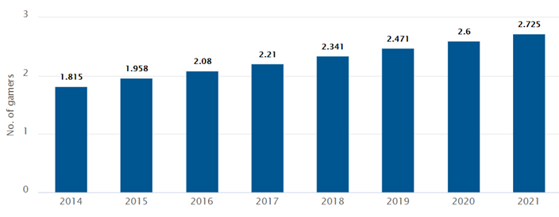
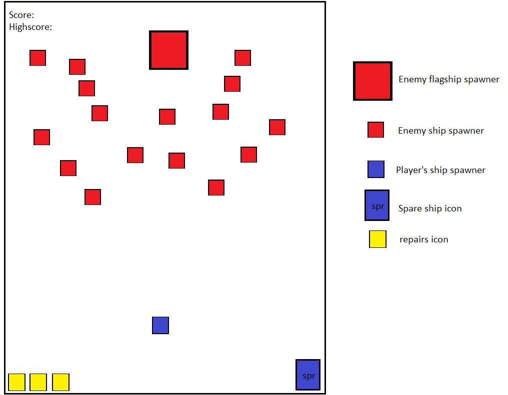
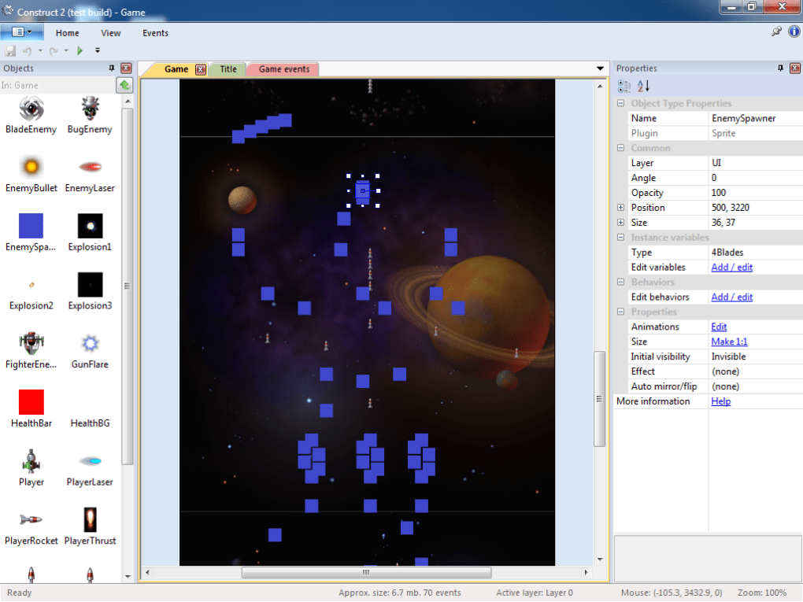

Although the gaming industry is not something new, which is introduced to the mass media from the 1970s with the introduction of pong and in constant progression ever since, it only truly explodes a few decades ago, to the point of being an industry that worth hundreds of billions of dollars and with billions of players around the world, due to the relative ease of accessibility and recently, due to lockdown and the subsequent layoffs makes gaming a popular activity and creates a huge demand for games. As such, the current market is filled with games which incorporate advanced game engine and graphic but becoming increasingly questionable in both the gameplay’s quality and the legality of its microtransaction practices. And because of that, many people want to go back in time, to the era of 2D games with the nostalgia of the past but with the current advancement in technology. That is why this project can be interesting and can have promising results.
(Screenshot: Number of gamers from 2014 to 2020
and estimation to 2021(In Billions))
Source: Adapted from [1]
(Screenshot: Number of games released on Steam
from 2014 to 2019)
Source: Adapted from [2]
The start screen appears after the game is launched and finish loading
its data. This screen. This screen sill be made up of four components:
- The game’s title the game’s title will be displayed symmetrically to both sides
and close to the top of the screen in arcade classic font. The project’s name
will be something that represents the game’s theme and will be something all
members agree with.
- The buttons: As for the basic
design, there will be two buttons: “START” and “QUIT” placed on both side in
positions that is symmetrical to each other. Those buttons should be able to do
the task which is implied in their name: to start the game and to quit running
the program.
- Background images: This part will
show the game’s theme and can be used as background for many stages. As such, to
best enhance the experience and to suits the aesthetic of the project, it is
best that the images use for background purposes should be 8-bits or at worst,
16-bit that is either space or retro themed.
The basic design plan for the project's start screen
- Background music and sound effects: This is something that is crucial in any game, especially shooting game due to those are the factors that sets the pace of the game, create the mood, enhance the action, and intensify the actions. For the sound effects, they also have the role of differentiating different effects, attacks, and actions. For this project, due to the situation of copyright and usage issues, only royalty-free soundtracks and free sound effects online is in consideration to be used for this project. With that said, it should be enough for this project to run smoothly.
The game lets you take the persona of a man who controls a pixelated starship on the journey across the galaxy, Throughout the journey, he meets and have confrontations against others who are in the process of amassing an armada and seeks to control the entire galaxy.
1. Basic gameplay: Like the older shoot ‘em up games that this project is inspired by such as galaga, space invaders or asteroids, the player starts the game at the bottom of the screen with three repairs and use arrow and keys to command the ship to exchange fire with waves of enemy ships flying in close formation that appears from all sides of the screen and fire in either volleys or in patterns. Every time the ship either got hit by the enemy’s shots or collides with the flagship/mothership, a repair is used. If the ship got hit but ran out of repairs, then the ship will be shot down and the choice to respawn appears. After the player clears the small ships, a flagship or mothership will appear, depending on the stage that the player is in. These ships not only have more hit points but also the ability to either fire guided munition or deploy small crafts to act as shield and extra firepower. Each stage is differentiated by different background image and if possible, background music and different enemy ships skin.
Basic gameplay design
 2.
Fire enhance upgrade and special mode: In the game, the special mode is
activated with a key that allows the ship to have a temporary increase in a
certain aspect for limited in both time
and usage. There are also items that can upgrade the ship’s firepower that can
be picked up from defeated flagships/motherships.
3. Lives management and respawn
limitation: The player starts the game with three repairs and a backup ships
and proceeds to exchange fire against the enemy. Every time the player got hit, a repair is used and the ship will be
back to full fighting conditions, with all points and upgrades picked up
before. Once the ship ran out of repairs and the ship got shot down, there will
be a choice to return to the battle in a backup ship. The player if returns in
a backup ship will comes back to the fight with points reset and all upgrades
from before gone. Repairs can be picked up by shot down special enemies, while
backup ship can only be used only once.
For this project, two software should be enough to cover the basic functions of building a game: Construct 2 or Construct 3 to make the game itself, and GitHub for version control and file management. Construct is a game editor aimed at non-programmer with the use of visual programming. It is a HTML5-based game engine which is written in C++ and Java Script. While Construct 2 and Construct 3 has a free version, Construct2’s free version can function well on its own, Construct3 only offer a wider range of functions, but limited at the number of events can be coded into the game. GitHub is a hosting service for the purpose of software management. It takes the form of a web-based service that allows the user to create and modify repositories and focus on the aspect of bring a hub for code-sharing and hosting.
Figure: Example of usage with Construct2
Source: Adapted from [3]
As for this Project, the utmost importance skill needed for this project is the knowledge of using Construct game-engine effectively to create a functional game. After that is design capability and report-writing skills. As for GitHub, throughout the last few weeks, basic knowledge for using GitHub effectively as a platform for version control is taught in the course’s tutorial section. Concerning Construct, the next one or two weeks should be enough to learn the basic of using this game engine. Because Christmas break will take place right after the moment this assignment is submitted, there should be time to learn the necessary skills.
If the project is completed, the result will be a fun and quite challenging game that is not only a good way to relax and kill time but also a nice exercise to train for better hand-eye coordination.
created with
WYSIWYG HTML Editor .